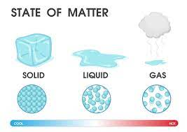

| State | Packed | Intermolecular forces | Kinetic energy |
|---|---|---|---|
| Solid | CLosely packed | Strong intermolecular forces | Least Kinetic energy of molecules |
| Liquid | Intermediately packed | Intermediate intermolecular forces | Intermediate Kinetic energy of molecules |
| Gas | widely spaced | Weak intermolecular forces | Greatest Kinetic energy of molecules |